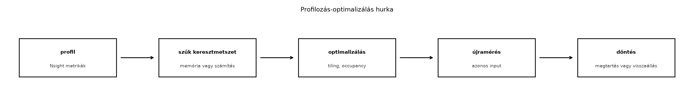

A kernel-szintű profilozás célja nem az, hogy egyetlen számot adjon a
GPU „sebességéről”, hanem hogy a kernel végrehajtását olyan mérhető
komponensekre bontsa, amelyekből reprodukálhatóan megállapítható, mi
korlátozza a teljesítményt: a memória, a számítás, a szinkronizáció vagy
a lapos párhuzamosság. Az Nsight Compute (parancssori neve
ncu) a CUDA toolkit része, és kifejezetten kernel-szintű,
hardveres számlálókon alapuló elemzést végez. Ellentétben az Nsight
Systems rendszerszintű, idősoros nézetével, az Nsight Compute egyetlen
kernel indítását vizsgálja, szekciókba rendezett metrikákkal, passzokba
szervezett újrafuttatással, és a hardver teljesítményszámlálóit olvassa
le. A mért adatok alapján eldönthető, hogy a kernel a memória- vagy a
számítási korlát közelében fut-e, és hogy a foglaltság elég magas-e a
késleltetés elrejtéséhez.
A profilkérés során a kernel nem egyszer fut le: az Nsight Compute a
kiválasztott metrikaszakaszoknak megfelelően újrajátssza a kernel
indítását. Egy passz egy vagy több hardveres számlálót gyűjt; a
--set full például az összes elérhető szekciót bekapcsolja,
ami nagyon lassú lehet. A gyakorlatban célzott szekciókat érdemes kérni,
például a SpeedOfLight, az Occupancy, a
MemoryWorkloadAnalysis és a
ComputeWorkloadAnalysis szekciókat. A profilozás torzítja a
futási időt, mert a számlálók olvasása, az esetleges órajel-szabályozás
és a kernel ismételt futtatása miatt a mért idő nem azonos a normál
futási idővel. Ezért a végleges futásidőt külön, CUDA eventekkel vagy
cudaEventElapsedTime méréssel kell meghatározni, míg az
Nsight Compute a szűk keresztmetszet elemzésére való. A mérési naplóban
rögzíteni kell a GPU típust, a drivert, a CUDA-verziót, az Nsight
Compute verzióját, a power limitet, az ECC/MIG beállítást, az órajelet
és a háttérterhelést; ezek mind befolyásolják a hardveres számlálók
értékét.
Az Nsight Compute parancssori használata jól scriptelhető. Egy tipikus parancs:
ncu --section SpeedOfLight \
--section Occupancy \
--section MemoryWorkloadAnalysis \
--section ComputeWorkloadAnalysis \
--launch-skip 3 \
--launch-count 1 \
--csv \
./saxpyA --launch-skip kihagyja az első néhány kernelindítást,
hogy a CUDA kontextus és a memóriaallokációk bejáródjanak. A
--launch-count 1 csak a következő kernelindítást
profilozza. A --csv géppel feldolgozható kimenetet ad. A
--kernel-name opcióval név szerint szűrhetünk, a
--metrics opcióval pedig egyedi metrikákat kérhetünk,
például
dram__bytes_read.sum,dram__bytes_write.sum,smsp__sass_thread_inst_executed_op_fadd_pred_on.sum.
A metrikák és szekciók pontos neve a telepített Nsight Compute
verziójától függ; a labor előtt ellenőrizni kell a
ncu --query-sections és a ncu --query-metrics
kimenetét.
A profilozás előtti bemelegítés és az ismételt mérés elengedhetetlen.
A GPU órajele a hőmérséklettől és a teljesítménykerettől függően
változik, ezért az Nsight Compute alapértelmezés szerint megpróbálja
stabilizálni az órjelet, például lehűti a GPU-t, vagy
--clock-control base móddal rögzíti az alapórajelet. Ezt a
beállítást dokumentálni kell. A mérési környezet reprodukálhatóságához a
következő adatokat kell rögzíteni:
GPU: NVIDIA A100-SXM4-40GB (compute capability 8.0)
Driver: 550.54.15
CUDA: 12.8
Nsight Compute: 2025.1.0 (ellenőrizni kell a tényleges verziót)
OS: Ubuntu 22.04.5 LTS
Power limit: 400 W
ECC: enabled
MIG: disabled
Háttérterhelés: nincsEzek az adatok helyőrzők; a laborban a saját környezetet kell rögzíteni.
A kernel-szintű profilozás három fő metrikacsoportja: occupancy,
memory és compute. Az occupancy azt mutatja, hogy az SM-re ütemezett
aktív warpok száma mekkora hányada az elméleti maximumnak. Az elméleti
maximumot a hardver korlátai határozzák meg: a regiszterek száma, a
shared memory mérete, a blokkonkénti maximális szálszám és a warp-szintű
limit. Ha a kernel túl sok regisztert használ, az SM kevesebb blokkot
tud ütemezni, így az aktív warpok száma csökken. A
launch_bounds minősítővel a fordító regiszterhasználatát
korlátozhatjuk, de ez regiszter spillhez vezethet, ami a lokális memória
forgalmát növeli. Az Nsight Compute Occupancy szekciója
megadja a tényleges és az elméleti foglaltságot, valamint a korlátozó
tényezőt, például Registers Per Thread vagy
Shared Memory Per Block. Az occupancy önmagában nem cél,
hanem eszköz: a késleltetés elrejtéséhez elegendő aktív warp kell, de a
túl magas occupancy nem feltétlenül javítja a teljesítményt, ha a
memória sávszélessége a szűk keresztmetszet.
A memóriametrikák azt mutatják, hogy a kernel mennyire hatékonyan
használja a memóriahierarchiát. A MemoryWorkloadAnalysis
szekció olyan metrikákat ad, mint a DRAM olvasási/írási byte-ok, az
L1/L2 találati arány, a memória csúcsáteresztő képességhez viszonyított
kihasználtság, a globális memória hozzáférési hatékonyság (coalescing)
és a shared memory bank conflict. A globális memória hozzáféréseknél a
hardver 32 bájtos szektorokban mozgatja az adatot; ha egy warp tagjai
szomszédos címeket érnek el, a hozzáférés coalescing hatékony. Ha a
hozzáférés szórt, akkor a szektorok egy része kihasználatlan marad, és a
tényleges adatforgalom megnő. A
l1tex__t_sectors_pipe_lsu_mem_global_op_ld.sum és a
l1tex__t_sectors_pipe_lsu_mem_global_op_st.sum metrikák a
tényleges szektorforgalmat mutatják. A memóriakorlátos kernelnél a DRAM
sávszélesség kihasználtsága közelíti a hardver csúcsértékét, miközben a
számítási egységek kihasználtsága alacsony marad.
A compute metrikák a számítási csővezetékek kihasználtságát mutatják.
A ComputeWorkloadAnalysis szekció megadja az SM
csővezetékek (ALU, FMA, tensor core, load/store, special function unit)
aktivitását, az utasítások végrehajtási statisztikáit és a warp stall
okait. A
smsp__warps_issue_stalled_long_scoreboard_per_warp_active.pct
például azt mutatja, hogy a warpok hány százaléka várakozik
memóriaeredményre. A
smsp__issue_active.avg.pct_of_peak_sustained_active az
utasításkibocsátás kihasználtságát adja. Ha a kernel számítási korlátos,
akkor az ALU/FMA csővezetékek kihasználtsága magas, a memóriaforgalom
viszont alacsony. A stall okok elemzése megmutatja, hogy a warpok miért
nem tudnak utasítást kibocsátani: memóriavárakozás, szinkronizációs
barrier, függőség, vagy egyszerűen nincs aktív warp.
A Roofline-modell ezeket a metrikákat egyetlen keretbe helyezi. A modell alapja az aritmetikai intenzitás (AI), amely a végrehajtott hasznos lebegőpontos műveletek és a ténylegesen mozgatott byte-ok hányadosa. Az intenzitás mértékegysége FLOP/byte. A hardver teljesítményét két korlát határozza meg: a memória sávszélesség (B) és a számítási csúcsteljesítmény (P_max). Egy kernel elérhető teljesítménye:
A Roofline-diagram log-log skálán ábrázolja ezt a függvényt: a ferde szakasz a memória-korlát, a vízszintes szakasz a számítási korlát. A töréspont (ridge point) az az intenzitás, ahol a két korlát egyenlő:
Ha a kernel AI-ja a töréspont alatt van, akkor a kernel memória-korlátos, és a teljesítményt a sávszélesség határozza meg. Ha az AI a töréspont felett van, akkor a kernel számítási korlátos, és a teljesítményt a csúcsteljesítmény határozza meg. Az Nsight Compute riportjából kiszámítható mindkét összetevő: a végrehajtott FLOP-ok száma és a DRAM byte-ok száma. A ténylegesen elért teljesítmény:
A ténylegesen elért sávszélesség:
A mért AI:
A mért pontot felhelyezve a Roofline-diagramra látható, hogy a kernel mennyire közelíti meg a hardver által elérhető maximumot. Ha a pont a ferde vonal közelében van, a kernel memória-korlátos; ha a vízszintes vonal közelében, akkor számítási korlátos. Ha a pont messze van mindkét vonaltól, akkor a kernel nem használja ki sem a memória sávszélességet, sem a számítási egységeket; ilyenkor occupancy-probléma, rossz hozzáférési minta vagy szinkronizációs veszteség állhat a háttérben.
Egy egyszerű SAXPY kernel kiválóan szemlélteti a kernel-szintű profilozást és a Roofline-elemzést. A kernel minden bemeneti elempárra egy szorzást és egy összeadást végez, így a memóriaforgalom dominál. A forrás:
#include <cstdio>
#include <cuda_runtime.h>
#define CHECK_CUDA(call) \
do { \
cudaError_t err = call; \
if (err != cudaSuccess) { \
std::fprintf(stderr, "CUDA error at %s:%d: %s\n", __FILE__, __LINE__, \
cudaGetErrorString(err)); \
std::exit(EXIT_FAILURE); \
} \
} while (0)
__global__ void saxpy_kernel(const float* __restrict__ x,
const float* __restrict__ y,
float a, float* __restrict__ out,
int n) {
int idx = blockIdx.x * blockDim.x + threadIdx.x;
if (idx < n) {
out[idx] = a * x[idx] + y[idx];
}
}
int main(int argc, char** argv) {
int n = (argc > 1) ? std::atoi(argv[1]) : 1 << 20;
std::size_t bytes = n * sizeof(float);
float *d_x, *d_y, *d_out;
CHECK_CUDA(cudaMalloc(&d_x, bytes));
CHECK_CUDA(cudaMalloc(&d_y, bytes));
CHECK_CUDA(cudaMalloc(&d_out, bytes));
float* h_x = new float[n];
float* h_y = new float[n];
for (int i = 0; i < n; ++i) {
h_x[i] = 1.0f;
h_y[i] = 2.0f;
}
CHECK_CUDA(cudaMemcpy(d_x, h_x, bytes, cudaMemcpyHostToDevice));
CHECK_CUDA(cudaMemcpy(d_y, h_y, bytes, cudaMemcpyHostToDevice));
int block = 256;
int grid = (n + block - 1) / block;
cudaEvent_t start, stop;
CHECK_CUDA(cudaEventCreate(&start));
CHECK_CUDA(cudaEventCreate(&stop));
CHECK_CUDA(cudaEventRecord(start));
saxpy_kernel<<<grid, block>>>(d_x, d_y, 2.0f, d_out, n);
CHECK_CUDA(cudaGetLastError());
CHECK_CUDA(cudaEventRecord(stop));
CHECK_CUDA(cudaEventSynchronize(stop));
float elapsed_ms = 0.0f;
CHECK_CUDA(cudaEventElapsedTime(&elapsed_ms, start, stop));
std::printf("SAXPY n=%d time=%.3f ms\n", n, elapsed_ms);
CHECK_CUDA(cudaMemcpy(h_y, d_out, bytes, cudaMemcpyDeviceToHost));
// Ellenőrzés: minden elem 4.0
bool ok = true;
for (int i = 0; i < n; ++i) {
if (h_y[i] != 4.0f) { ok = false; break; }
}
std::printf("Verification: %s\n", ok ? "OK" : "FAILED");
CHECK_CUDA(cudaFree(d_x));
CHECK_CUDA(cudaFree(d_y));
CHECK_CUDA(cudaFree(d_out));
delete[] h_x;
delete[] h_y;
return 0;
}A kód nyelvjelölése CUDA C++. A build és a futtatás:
nvcc -O3 -arch=sm_80 -o saxpy saxpy.cu
./saxpy 1048576A profilozás parancsa a gyakorlatban:
ncu --section SpeedOfLight \
--section Occupancy \
--section MemoryWorkloadAnalysis \
--section ComputeWorkloadAnalysis \
--launch-skip 2 \
--launch-count 1 \
--csv \
./saxpy 1048576A --launch-skip 2 kihagyja az első kernelindítást, mert
a fenti kód csak egyszer indítja a kernelt, ezért itt a
--launch-skip 0 szükséges, vagy egyszerűen hagyjuk el. A
laborban érdemes egy olyan harnesset írni, amely többször indítja a
kernelt, és a profilozást a 3.–5. indításra irányítani. A fenti példában
a --launch-skip 0 a helyes.
A mérési naplóban rögzíteni kell a fenti környezeti adatokat,
valamint a kernel saját mérését (a cudaEventElapsedTime
által adott időt), majd az Nsight Compute riportjának kivonatát. Egy
szemléltető riportkivonat (nem hitelesített mérés, a laborban a hallgató
saját értékeit kell bemutatnia):
Kernel: saxpy_kernel
Grid: 4096 blocks x 256 threads
Duration: 18.4 us (profilozott, Nsight Compute)
Registers per thread: 16
Shared Memory per Block: 0
Achieved Occupancy: 90.3%
Theoretical Occupancy: 100% (regiszterek alapján)
DRAM Throughput: 88.7%
Memory Throughput: 65.2%
Compute (SM) Throughput: 12.1%
L1/TEX Hit Rate: 0%
L2 Hit Rate: 0%
DRAM Read Bytes: 8388608
DRAM Write Bytes: 4194304
Elapsed Cycles: 25980
SM Frequency: 1410 MHzEzek az értékek a SAXPY kernel tipikus képét mutatják: a memória sávszélesség kihasználtsága magas, a számítási csővezetékek kihasználtsága alacsony, az L1/L2 találati arány nulla, mert a beolvasott adatok egyszer használtak, és nincs újrafelhasználás. A DRAM olvasási byte 8 MiB (két bemeneti tömb), az írási 4 MiB (egy kimeneti tömb). A kernel által végzett hasznos FLOP 2N = 2 * 1 048 576 = 2 097 152. Az AI:
Egy A100 GPU esetén a memória csúcssávszélesség körülbelül 1555 GB/s, a számítási csúcs (FP32) körülbelül 19,5 TFLOPS (a pontos érték a specifikációtól függ, ellenőrizni kell). A töréspont:
A SAXPY AI-ja ennél sokkal alacsonyabb, tehát a kernel egyértelműen memória-korlátos. A mért DRAM sávszélesség a riportból: a profilkérés során mért idő 18,4 µs, így a sávszélesség:
Ez az A100 elméleti csúcsának töredéke, de a profilozott idő torzít; a normál futásban a CUDA eventes mérés ennél jobb értéket adhat. A laborban a hallgató feladata, hogy a saját méréséből számolja ki a tényleges sávszélességet, és hasonlítsa össze a várt maximummal.
A tipikus hibák és a helyes megoldások:
Hideg indítás profilozása. Ha az első
kernelindítást profilozzuk, a CUDA kontextus inicializálása, a modul
betöltése és a memóriaallokációk torzítják a mérést. Helyes megoldás:
melegítő kernelindítások, --launch-skip vagy a kernel
többszöri futtatása a profilozás előtt.
A --set full indokolatlan
használata. A teljes metrikakészlet minden kernelindításnál sok
passzt igényel, ami lassú és a mérési zajt növeli. Helyes megoldás:
először a SpeedOfLight szekcióval meghatározni a korlátot,
majd a megfelelő további szekciókat (Occupancy, MemoryWorkloadAnalysis
vagy ComputeWorkloadAnalysis) célzottan lekérni.
Az occupancy egyetlen számra redukálása. A magas occupancy önmagában nem garantál gyors futást, és az alacsony occupancy nem feltétlenül hiba. Helyes megoldás: az occupancyt a memória- és számítási metrikákkal együtt értelmezni, és a stall okokat is elemezni.
A Roofline-pont rossz kiszámítása. Gyakori hiba,
hogy a névleges csúcsértékekkel osztanak, nem a ténylegesen mért DRAM
byte-okkal, vagy a FLOP-okba beleszámolják a redundáns műveleteket is.
Helyes megoldás: az Nsight Compute riportjából kinyert
dram__bytes_read.sum és dram__bytes_write.sum
értékeket használni, és a kernel által ténylegesen elvégzett, hasznos
lebegőpontos műveleteket számolni.
A profilozott idő és a normál futásidő összekeverése. Az Nsight Compute a kernel többszöri újrafuttatásával, órajel-stabilizálással és számláló-olvasással torzítja az időt. Helyes megoldás: a futásidőt külön, CUDA eventekkel mérni, és az Nsight Compute-ot csak a szűk keresztmetszet elemzésére használni.
A mérési környezet nem dokumentált. Ha a power limit, az ECC, a MIG vagy a háttérterhelés nem rögzített, a metrikák nem reprodukálhatók. Helyes megoldás: a mérési napló a GPU típusát, a drivert, a CUDA-verziót, az Nsight Compute verzióját, az órajelet, a power limitet, az ECC/MIG beállítást és a háttérterhelést tartalmazza.
Az OpenCL/JAX eszközök metrikáinak automatikus átültetése. Az Nsight Compute CUDA kernelekhez készült; OpenCL vagy JAX esetén más profilozó eszközök (például a gyártó által biztosított profiler, roofline-elemző) szükségesek. Helyes megoldás: a laborban CUDA C++ kernelt használni az Nsight Compute-hoz, és a más nyelveknél külön jelezni, hogy a metrika nem közvetlenül összehasonlítható.
A labor feladata: a hallgató írja meg a SAXPY kernelt (vagy egy hasonló, egyszerű, ellenőrizhető kernelt), futtassa le az Nsight Compute-ot a fenti szekciókkal, gyűjtse ki a metrikákat, számolja ki az AI-t, és helyezze el a pontot egy Roofline-diagramon. A jelentésben különítse el a mért és a várt eredményeket: a várt eredmény a hardver specifikációjából számított Roofline-görbe, a mért eredmény a kernel ténylegesen elért sávszélessége és FLOP/s értéke. A dokumentációban adja meg a mérési naplót a fenti környezeti adatokkal, a build- és futtatási parancsokkal, valamint a Nsight Compute riport kivonatával. A jelentésnek tartalmaznia kell egy rövid elemzést arról, hogy a kernel memória- vagy számítási korlátos-e, és hogy az occupancy elegendő-e a késleltetés elrejtéséhez.
Önellenőrző kérdés: Egy mátrixszorzó kernel (single precision, tiled, shared memory nélkül) M=N=K=1024 esetén 2MNK FLOP-ot végez, és a DRAM forgalom megközelítőleg 4(MK + KN) byte (a kimenet írását most ne számoljuk). Számítsa ki az aritmetikai intenzitást. Egy A100 GPU esetén (B ≈ 1555 GB/s, FP32 csúcs ≈ 19,5 TFLOPS) a kernel memória- vagy számítási korlátos? Hogyan változik a helyzet, ha a mátrixok mérete N=64-re csökken?
A kérdés megválaszolásához a hallgatónak fel kell ismernie, hogy az AI = (21024^3) / (4(10241024 + 10241024)) ≈ 1024/4 = 256 FLOP/byte, ami messze a töréspont felett van, tehát számítási korlátos. N=64 esetén az AI = 64/4 = 16 FLOP/byte, ami a töréspont közelében van, és a kernel inkább memória-korlátossá válik. Ez a gyakorlat a Roofline-modell gyakorlati alkalmazását erősíti meg.
A fejezet továbbvezető eredménye, hogy a kernel-szintű metrikák ismerete nélkülözhetetlen a rendszerszintű profilozáshoz, amelyet a következő alfejezet, az Nsight Systems tárgyal. A kernelprofilozás megmutatja, mi a korlát egy kernelben, a rendszerprofilozás pedig azt, hogy a kernelek, memóriaműveletek és szinkronizációk hogyan viszonyulnak egymáshoz a teljes alkalmazásban. A két nézet együtt ad teljes képet a GPU-s alkalmazás teljesítményprofiljáról.